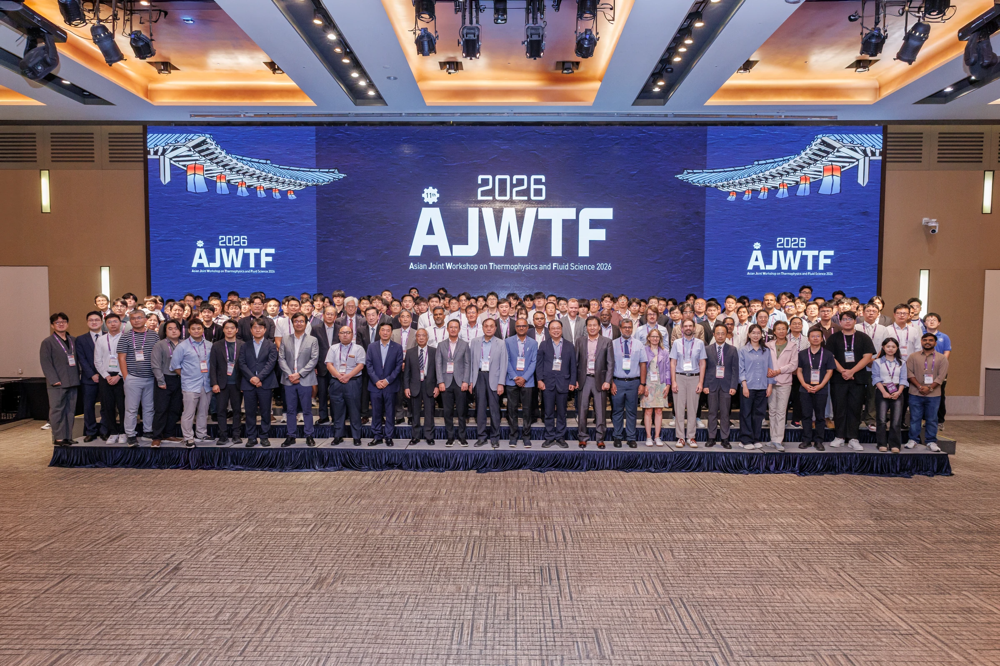

2026年9月13–16日，第11届亚洲热物理与流体科学联合研讨会（Asian Joint Workshop on Thermophysics and Fluid Science，AJWTF2026）在韩国济州举行。GSFP团队赴会作相关学术报告，分享研究进展，并与参会学者开展交流。
AJWTF是每两年举办一次的系列学术会议，首届会议于2006年在中国曲阜举行，旨在为亚洲地区热物理与流体科学研究人员提供展示前沿研究、讨论学术问题和开展合作的平台。本届会议由韩国可视化学会（The Korean Society of Visualization）组织。
会议议题涵盖多相流、流动测量与仪器、流动控制、传热传质，以及流体工程中的人工智能与数据驱动方法等方向，设有主旨报告、专题技术交流和海报展示等环节。团队通过报告与讨论，围绕相关研究问题与同行交流，了解热物理与流体科学领域的新进展。
